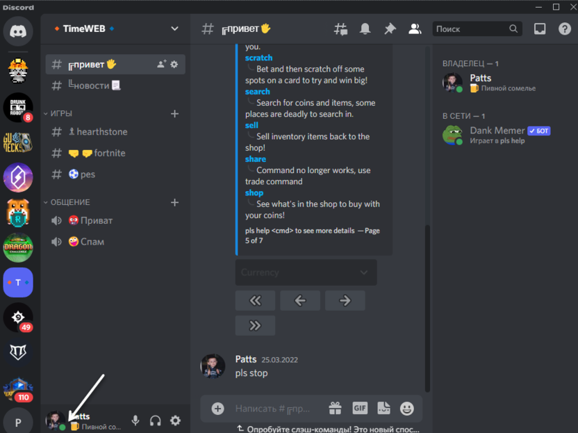
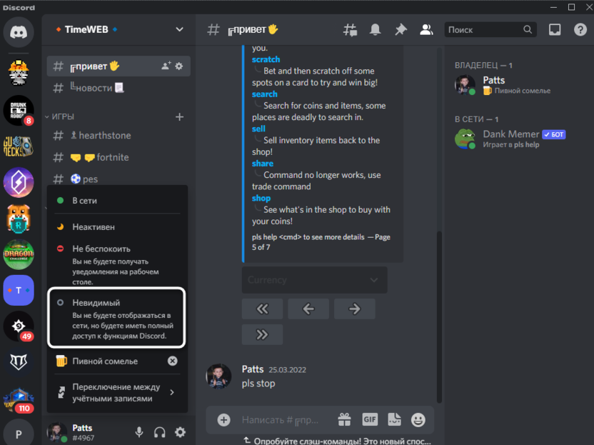
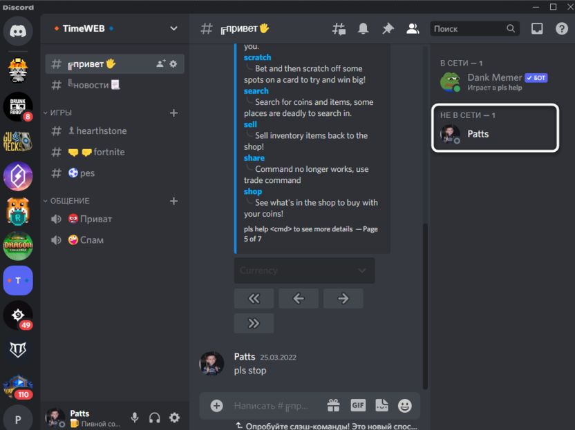

Сайт обновлён до версии 1.1!
Здесь собираеться только самая интересная информация из жизни клана.
Лучший клан на 6g6s
Внимание! Шпион!
Дата публикации: 14.06.2024
В клане началась заварушка, к нам подослали шпионов!
Соклановцы, убедительная просьба поставить "невидимый" статус в Discord.
Это нужно для того, чтобы шпионы, которые были подосланы в клан, думали что он "вымер".
Инструкция по установке "невидимого" статуса:
«Невидимка» – особый статус в Дискорде, который позволяет вам не отображаться в сети,
но при этом использовать все доступные функции данного мессенджера. Конечно, при этом
другие юзеры не будут видеть вашу игровую активность. Используйте этот вариант, если
хотите отключить отображение игр только на определенное время, а затем снова вернуть
настройки по умолчанию.
1. Нажмите по значку со своей аватаркой внизу, чтобы вызвать меню управления
пользовательскими статусами.

2. В списке отыщите «Невидимый». Если не знаете, как работает эта функция, прочитайте
ее описание, хоть я выше и рассказал все необходимое.

3. После активации вы будете перемещены в статус «Не в сети», но при этом можете
отправлять сообщения, подключаться к трансляциям и выполнять привычные действия.
Можете играть в любую игру и не беспокоиться о том, что она отобразится в статусе
игровой активности.

Это всё, что требовалось от вас, дорогие соклановцы.
Спасибо за внимание!